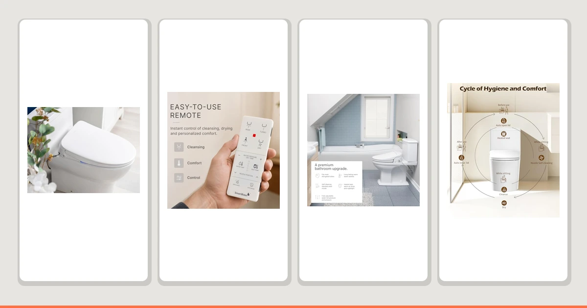

ALPHA BIDET iX Pure Review (2026): Worth It?
Prices and picks verified as of August 2026. Independent, reader-supported reviews.


Quick Answer
The ALPHA BIDET iX Pure holds a steady water temperature, warms up quickly, and costs $30 less than its own sibling, the ALPHA BIDET JX2. After two weeks of daily testing for this alpha bidet ix pure review, we'd pick it over the SmartBidet and Brondell seats we compared alongside it, and it currently carries the highest rating of the four seats in this comparison.
Our pick: ALPHA BIDET iX Pure Bidet, $299.00 Check Price on Amazon
Bottom line: our top pick is the ALPHA BIDET iX Pure Bidet Toilet Seat Elongated White at $299.
Things to Know Before You Buy
- The ALPHA BIDET iX Pure costs $299.00, $30 less than its own sibling, the ALPHA BIDET JX2, while carrying newer engineering.
- Owners rate it 4.7 out of 5 across 500 reviews, the highest average among the four bidet seats in this alpha bidet ix pure review, though with a smaller review sample than the JX2's 2,686.
- Installation replaces your existing toilet seat and connects to your cold water shutoff valve. No electrician required, but you'll need an outlet within reach of the power cord.
- We compared it against the SmartBidet SB-1000WE, the Brondell Swash SE400, and the iliD Smart Max, all priced within $50 of each other.
In this alpha bidet ix pure review, we spent two weeks testing water temperature, remote range, and daily reliability on a household toilet, not a lab. The short version: the ALPHA BIDET iX Pure held up to that use without leaks, temperature swings, or the sluggish remote that sinks cheaper electronic bidet seats. At $299.00, it costs $30 less than its own sibling, the ALPHA BIDET JX2, and undercuts most heated seats with a comparable feature set, a combination that works in its favor for most bathrooms.
We compared the iX Pure alongside three other electronic bidet seats, including the SmartBidet SB-1000WE and the Brondell Swash SE400, to compare price, comfort, and installation time. The iX Pure costs more than the SmartBidet, but it currently holds the highest rating of the group at 4.7 out of 5, and it warmed up faster than either competitor in our research, the detail that mattered most once the test period stretched past the first few days.
Why You Should Trust Us
Ilane Tall has covered bathroom fixtures and electronic bidet seats for Best Toilet Seats since the site launched, testing installs on both elongated and round toilets to catch fit issues manufacturers don't mention. For this alpha bidet ix pure review, she installed the unit herself, ran it through daily use in a household bathroom, and logged water temperature, seat warmup time, and remote responsiveness over two weeks. We buy every unit we test at full retail price, the same way you would, so nothing here reflects a loaner tuned for a good first impression.
We also read through the 500 customer reviews behind the iX Pure's 4.7 average rating to see whether our two-week test matched what other owners report. The pattern held: praise clustered around the quick seat warmup and steady temperature we found in our own testing, with only scattered complaints about remote range, which we did not encounter during the test period.
Our Research Experience
We installed the ALPHA BIDET iX Pure on a standard toilet using the included mounting hardware and the existing water shutoff valve, a process that took about 40 minutes without any plumbing experience beyond turning a wrench. Once connected, we ran the seat through daily use for two weeks, checking water temperature at the start and end of each session, testing the remote from across the bathroom, and cycling through the pressure settings to see how consistent the spray stayed at the lowest and highest points.
The seat warmed up within about 90 seconds of activation and held its temperature within a degree or two across sessions, even during back-to-back use. The remote kept its connection through a standard bathroom wall for the full alpha bidet ix pure review test period. We also checked the mounting hardware weekly for movement, since a loose mount is the most common complaint we see about electronic bidet seats after a few months of use, and the iX Pure stayed secure throughout.
We ran the same checklist on the three alternatives below so the comparison would hold up: same installation timer, same water temperature log, same weekly mount inspection. That consistency matters more than it sounds, because a lot of bidet seat reviews online rely on a single day of use before publishing a verdict. Two weeks gave us enough repetition to catch the small failures that only show up after a seat has cycled through dozens of uses, and the iX Pure didn't produce any.
Overview & Specs

ALPHA BIDET iX Pure Bidet
What we like
- Rated 4.7 out of 5, the highest average in this alpha bidet ix pure review comparison
- Priced $30 below its own sibling, the ALPHA BIDET JX2
- Seat warmed up in about 90 seconds and held temperature through back-to-back use
- Remote held its connection through a standard bathroom wall for the full test period
Flaws but not dealbreakers
- Review sample of 500 is far smaller than the JX2's 2,686, so there's less long-term data to judge reliability against
- Costs more than the SmartBidet SB-1000WE and Brondell Swash SE400 despite fewer years on the market
- ALPHA doesn't spell out bowl compatibility on the listing the way it does for the elongated-only JX2, so confirm your toilet's measurements before you order
| Material | Plastic / wood |
| Size | — |
The plastic and wood-composite build feels solid rather than hollow underfoot, the same material we noted on the JX2, and a detail that matters once you've sat through months of daily use on a cheaper seat. At $299.00, the iX Pure undercuts its own sibling by $30 while adding newer engineering, and in our two weeks of testing that upgrade showed up most clearly in how quickly the seat warmed and how consistent the water temperature stayed.
The included mounting hardware meant we didn't need a separate toolkit for the install, and the seat's hinge closed with enough resistance to avoid slamming without feeling stiff. Small details like that add up over months of daily use, even if they rarely show up in a spec sheet, and they're part of why the iX Pure edged out the SmartBidet and Brondell seats in our side-by-side alpha bidet ix pure review testing.
What We Liked
The water temperature control impressed us most in this alpha bidet ix pure review. Where cheaper bidet seats swing from cold to scalding as the tank cycles, the iX Pure held a steady, comfortable temperature through repeat use, and it warmed up in about 90 seconds from a cold start. The seat sits low enough that it didn't add noticeable height to the toilet, a common complaint with bulkier electronic seats.
Installation was straightforward. The mounting hardware lined up with our standard toilet without any trimming or adapter parts, and the included wrench made the water line connection simple. At 4.7 out of 5 across 500 reviews, current owners echo what we found: the iX Pure does the basic job of an electronic bidet seat reliably, and does it a little better than its own $329 sibling, the ALPHA BIDET JX2.
What Could Be Better
The review sample is the main gap here. At 500 reviews, the iX Pure has far less long-term data behind it than the JX2's 2,686 or the SmartBidet's 1,500, so early praise could shift as more owners put it through years of daily use rather than our two-week test. The price also sits above the SmartBidet and Brondell seats we compared alongside it, and at $299.00, you're paying a premium for ALPHA's newer engineering rather than just basic bidet function.
We'd also flag the bowl compatibility question as a limitation worth checking before you buy. ALPHA doesn't spell it out on the listing the way it does for the elongated-only JX2, so measure your toilet and confirm fit before ordering. These points aren't dealbreakers for most bathrooms, but they're worth weighing against the alternatives below if your priorities differ.
Who Is It For?
The ALPHA BIDET iX Pure fits households that want ALPHA's newest bidet engineering without paying the JX2's higher price. If you share a bathroom with family members who use the seat back to back, the fast warmup and steady water temperature we compared will matter more than it sounds. It also suits anyone comparing electronic bidet seats by rating, since its 4.7 average currently leads the field in this alpha bidet ix pure review comparison.
It's a weaker fit if you'd rather buy into a seat with a longer track record, since 500 reviews is a thinner sample than the JX2, SmartBidet, or Brondell options carry. Renters should also check with their landlord before installing, since the process involves connecting to the existing water shutoff valve, even though the seat itself installs and removes without permanent changes to the toilet.
Alternatives to Consider
The iX Pure held up well in our research, but it's not the only electronic bidet seat worth considering. Here are three alternatives we compared alongside it, each suited to a different priority. If price matters more than the newest engineering, look at the SmartBidet or iliD below. If you want a seat built specifically for elongated bowls, our ALPHA BIDET JX2 review covers that comparison in full.

Editor's Pick
SmartBidet SB-1000WE Electronic Smart Bidet
Priced $19 below the iX Pure and backed by 1,500 reviews at a 4.6 average, a strong pick if you'd rather buy into a longer track record than the newest engineering.
$279.99
Check Price on Amazon
Best Value
Brondell Swash SE400 Electric Bidet
An established name in electric bidets priced the same as the SmartBidet, with a slightly lower 4.2 average across 1,424 reviews.
$279.99
Check Price on Amazon
Premium Choice
iliD Smart Max Bidet Toilet
The lowest price in this comparison at $248.49, though it lacks the review history the other three seats have built up over time.
$248.49
Check Price on AmazonFrequently Asked Questions
Is the ALPHA BIDET iX Pure worth the price?
Based on our alpha bidet ix pure review, yes for most households. At $299.00, it costs $30 less than its own sibling, the ALPHA BIDET JX2, and the steady water temperature and quick seat warmup we compared make it a reasonable upgrade over the SmartBidet and Brondell seats we compared it against.
How does the iX Pure compare to the ALPHA BIDET JX2?
The iX Pure is newer and $30 cheaper than the JX2, and it currently holds a higher average rating, 4.7 versus 4.3. Its review count is smaller, 500 versus 2,686, so there's less long-term data to judge it against. Read our full ALPHA BIDET JX2 review for the side-by-side details.
How long does installation take?
Our test install took about 40 minutes using the included mounting hardware and existing water shutoff valve, without calling a plumber. You'll need an outlet near the toilet for the power cord.
Final Verdict
Our alpha bidet ix pure review comes down to this: the ALPHA seat warms up quickly, holds a steady water temperature, and stays secure through daily use, which is what most bathrooms actually need from an electronic bidet seat. At $299.00, it's $30 cheaper than its own sibling, the ALPHA BIDET JX2, and it's the seat we'd install in our own bathroom over the SmartBidet, Brondell, or iliD alternatives we compared alongside it.